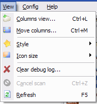
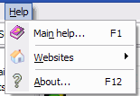

You can find here the full menus review.
1) File
- Open current folder... : Open the folder selected in the view in the Windows Explorer.
- Create associated VMI... : This menu's avialable only if the VMS is alone.
You can create the VMI associated by selecting this option.
- Copy to... : This item'll copy the selected file to another location.
- Move to... : This item'll move the selected file.
- Delete... : Allow you to delete the current file. It deletes both VMI and VMS. This operation can't
be undone.
- View in Hex Editor... : Launch your Hex Editor with the current file in parameter. You must
configure it before. If you select this item on a valid VMI-VMS file, it'll launch the
edition of the VMS file. Else, it launch the edition of the real file name selected on the list.
- Save details... : Exports the to a RTF file.
- Pictures : Perform operations on file images (on the
tab). Read more.
- Exit : I don't remember why I put this here
2) View

- Columns view... : Hide or show columns.
- Move columns... : Changing columns places.
- Style : Configure the file list view style.
- Icon size : Select the icon size used in the file list. Default's 24x24.
- Clear debug log... : Reset all the text displayed in the tab.
- Cancel scan : Stop the current folder scan.
- Refresh : Refresh the current selected folder and display files in the list view.
3) Config
- Checksum format : Allow you to change the checksum format to Hex or Decimal.
- VMS size format : Change the file size to bytes or blocks.
4) Help

- Main Help : Really, I don't know what's it. May be a ugly file with bad
phrases written... Ah yes, that's called Engrish. All your base are belong to us.
- Websites : Visit some cool websites

- About : Display a nice easter egg...